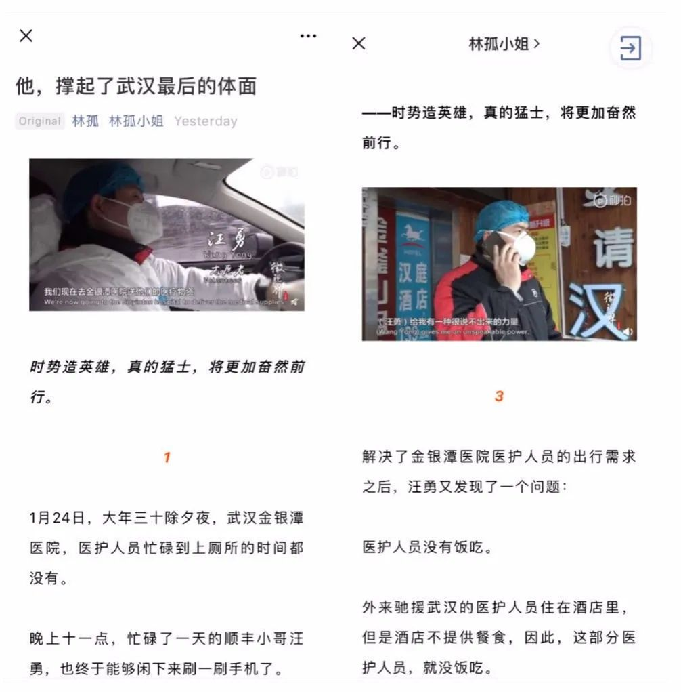
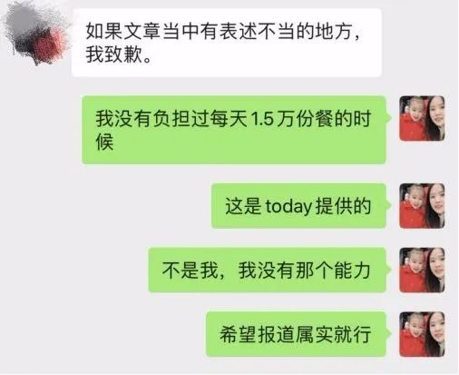
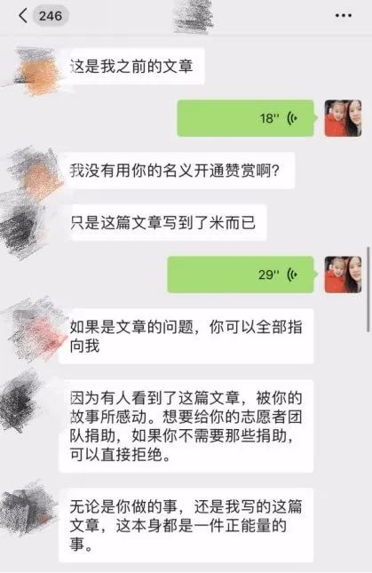
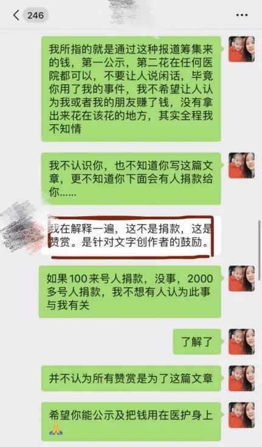
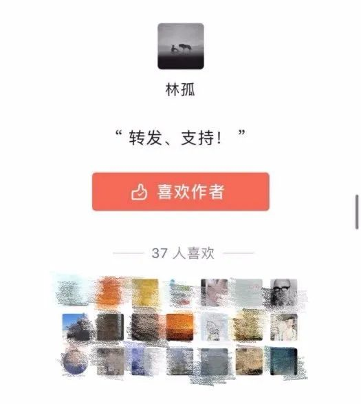
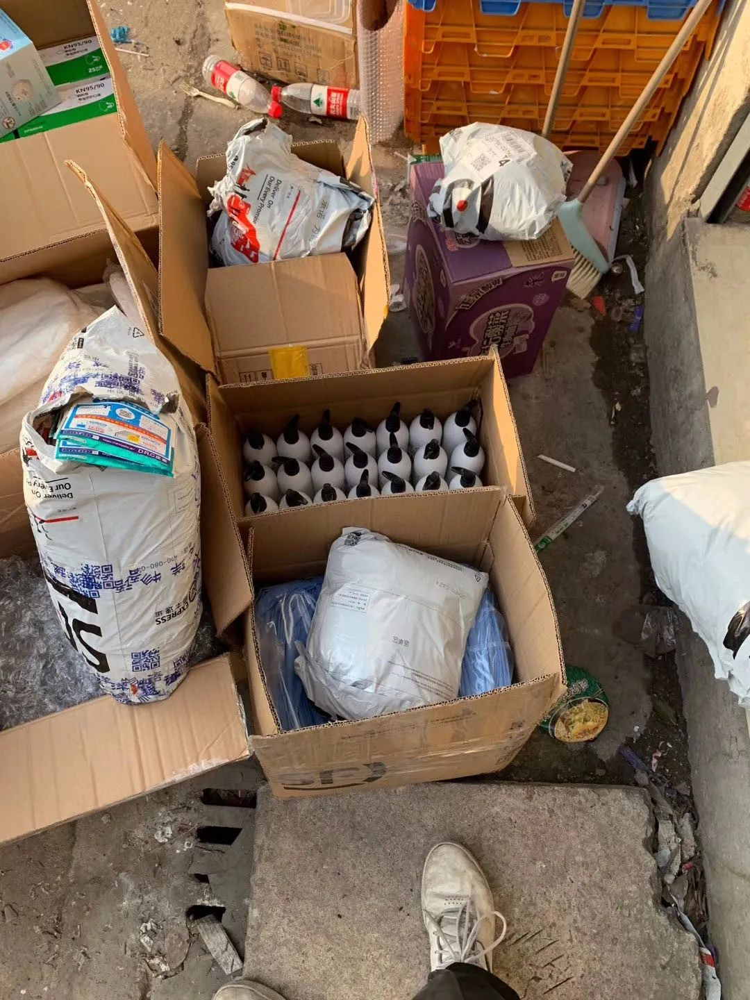
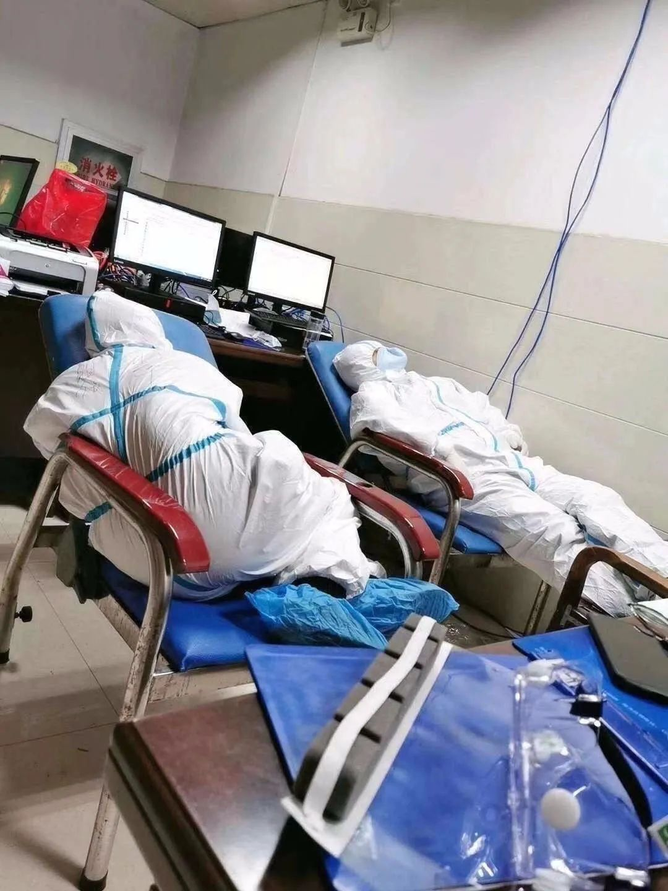
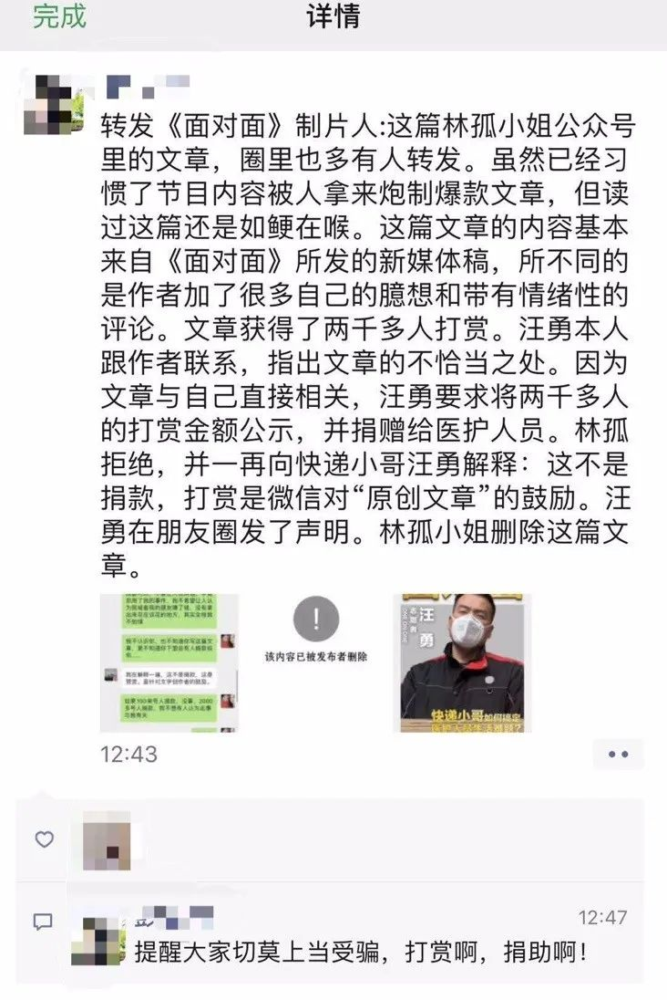

感动全网的快递小哥汪勇，又为援鄂医疗队解决了好几个难题
原文链接 备份链接 对于“爆红”汪勇并不在意，作为一个组局的人，他还不能停下脚步。 记者 | 吴 雪 “快递小哥”汪勇，一夜之间成为了“网红”。报道发出后，新民周刊接到了数千位热心读者的留言，纷纷表示要捐款捐物。目前，我们已经成立专项小组 …

疫情是一面镜子，对每一个个体亦是如此，它照出了一些人的高尚与伟大，也照出了一些人的卑劣与渺小。
记者 | 吴 雪
2月15日，新民周刊刊发了《快递小哥解决金银潭医护难题：我送的不是快递，是救命的人啊。》一文，引发社会广泛反响，人民日报、央视新闻等主流媒体纷纷转发，新民周刊也第一时间开通了捐赠物资对接通道，目前已经为武汉前线对接了1.5万余件捐赠的医疗物资。在全国人民携手抗疫的大背景下，我们感动于这位80后普通快递小哥的挺身而出，更感动于每一个普通人、平凡人为抗疫所做出的不平凡的努力。
然而，就在昨天（2月25日），一篇题为《他，撑起了武汉最后的门面》的文章在朋友圈刷屏，文章通篇讲述了快递小哥汪勇的故事，获赞、评论无数，阅读数也很快到了10w+。汪勇看到这篇文章时，正在跟踪捐赠给医院的一批物资，开始他并没有在意，但印象中，他并未接受过这位自媒体作者“林孤小姐”的采访。

林孤小姐在未采访汪勇情况下，发布了《他，撑起了武汉最后的体面》
中午一点钟，汪勇通过公众号里的商务合作菜单联系上林孤时，得知这篇文章，并非她本人采写，也从未与当事人汪勇联系过，而是根据本刊微信公众号以及央视新媒体稿件编造洗稿而成，并在叙述表达时加入了诸多作者个人的臆想。
“许多内容都不属实，表达上和评论回复里也存在故意煽动读者情绪，我觉得很不妥。”汪勇通读了文章，向对方指出了表达上存在的一系列问题，那时，作者设置了文末打赏按钮，打赏人数只有几百人。
汪勇指出：
第一，“林孤小姐”写道：“汪勇看到金银潭医院医生的求助信息：‘有没有顺风车送我们回家’后，汪勇接下了这个单子。”汪勇说，当时自己并非顺风车司机，而是开着自己的私家车，义务接送医护人员，因此，并不存在“接单”一说，个人也从未收取过任何人的钱。

汪勇截图指出“林孤小姐”报道失实 图｜汪勇供图
第二，“林孤小姐”描述：“车队人数，迅速扩展到30人。”该数字未经核实，并非迅速扩展为30人，而是前后总共30人左右，最多时接送医护人员也不过5-6个人。
第三，“林孤小姐”称：“汪勇的盒饭供给量，已经是一个庞大的数字了，每天要提供盒饭15000多份。”汪勇说，对方未向他本人核实，自己并未负担过每天1.5万份的餐，而是武汉一家本地企业“today便利店”牵头爱心企业一并提供的。

汪勇截图指出“林孤小姐”报道失实 受访者供图

汪勇与作者“林孤小姐”对话 受访者供图
汪勇说，和“林孤小姐”联系的最初目的是看看能否更改文中“表述失实”之处，并建议作者写作时尽量不要带有个人情绪，希望给大家带去正能量。“当时对方答应得很好，但到了晚上12点我看她还没修改，而且文末的打赏已经到了2059个人，我觉得这件事情不对了。”汪勇告诉《新民周刊》，简单算一笔账，打赏按钮中有最低5块—200块的金额，如果按照2000人打赏为基数，那么所得金额将是最低1万块，最高40万的钱数，还不算“其他金额”这一选项。

“林孤小姐”公众号的打赏页面
汪勇告诉《新民周刊》，他并不清楚这个打赏的用途，他有一个简单的想法，既然作者并未对他进行过采访，又用他的故事和影响力来宣传和获取打赏，他担心善款是否就能够用在前线医护人员身上。但汪勇在与林孤小姐沟通后，对方给到的回复是：“打赏并非募捐，每一篇原创文章，都有赞赏功能，这不是捐款，而是赞赏，是针对文字创作者也就是林孤小姐自己的鼓励。”
汪勇很无奈，提出了自己的建议：第一，公示所得钱款，第二，将钱款花在任何医院或者医护人员身上均可，不希望别人认为是他或者他的朋友依靠此事而赚了钱。“我不知道她会写这篇文章，更不知道下面会有人打赏。”


林孤小姐与汪勇微信对话受访者供图
但“林孤小姐”一再强调通过发布未经核实的文章进行打赏，并无任何不妥。几番沟通无果后，凌晨00：32，汪勇在朋友圈转发了该文并发布严正声明:“该文章未对我进行采访，与作者不认识，且素材也非我提供，后面有2000多人打赏也与本人无关，未发起任何募捐及打赏，特此声明。”

林孤小姐与汪勇微信对话 受访者供图

2月26日凌晨，汪勇在朋友圈发表声明
声明发出后，今天凌晨1点钟，作者“林孤小姐”迫于压力删除了该文。《新民周刊》记者在“林孤小姐”公众号看到，该公众号一共发表原创文章313篇，每一篇下面均有打赏按钮，除了汪勇故事这篇，笔者大概统计了下发表在近期的几篇文章，武汉街头流浪者、限制韩国人入境以及监狱风云等，打赏人数均未超过30人，最高时打赏也不过100人。而对方也承接相关广告业务，在商务合作一栏，她要求品牌谈合作时，注明品牌和合作方式，具体标价不明。

“林孤小姐”微信公众号打赏页面
“林孤小姐”微信公众号商务合作页面
汪勇告诉《新民周刊》，事实上，自己根本没有精力管这件事，他想把宝贵的时间放在帮助医护人员这些重要的事情上。虽然自打2月23日返回工作岗位，但一线的工作并没有停止，对接物资、解决难题、许多应急事件的处理，仍然非常需要他。最近几天，他越来越忙了，因为武汉管控升级，许多小区三天只让居民出来一次，很多志愿者出不来，导致许多支援事件停滞不前。

汪勇在对接一批捐赠物资 受访者供图
而他对志愿者的招募也不再局限于“必须一个人住”、“严格遵循消毒流程”，而是必须要有共同的价值观。相比之下，靠着汪勇事件的影响力洗稿敛财的“林孤小姐”是否应该好好反省？截至目前，全国派出了380多支医疗队、4.2万余名白衣天使奋战在一线；方舱医院、火神山医院、雷神山医院，昼夜灯火通明，只为患者赢得一线生机。

医护人员在靠椅上短暂小憩 受访者供图
静安区三星居民区的社区工作者周荣为了保证小区居民健康、天天上门排查、测温，连鞋底都磨破了；武汉同济医院的后勤人员李师傅，只要需要，即便在凌晨一两点也会爬起来做消杀工作；蓝天救援队机动车队队长许鹏，为了第一时间将物资送达医院，连夜开车到山东拉货，不幸遭遇车祸付出了年轻的生命。你看，在祖国各地，每一个“汪勇们”都在拼了命地保障一线、救治患者，期待着武汉重启，期待着2020春天的到来。
反观这位“林孤小姐”，作为自媒体作者，不仅没有利用庞大的流量做善事，反而变相敛财。这让笔者不禁想起了一件事，快递小哥汪勇事件报道后，广州越秀区农林下路小学五年级三班小学生孙盟鸥，写下了一篇《读后感》，他说：“汪勇是一名再普通不过的中国人，但他却是我们的榜样，我们少先队员也应该做一些力所能及的事，我让妈妈找到了汪勇的微信号，捐出了我的压岁钱。”


广州越秀区农林下路小学五年级三班小学生孙盟鸥
连一个五年级小学生都懂得的道理，为什么一个拥有独立认知的成年作者，却置若罔闻？我们当然不可能要求所有人的价值观都一样，但至少，不能洗稿、更不能传播虚假消息应该是自媒体的底线。显然这些基本的要求，“林孤小姐”都没有做到。

疫情是一面镜子，对每一个个体亦是如此，它照出了一些人的高尚与伟大，也照出了一些人的卑劣与渺小。汪勇对“林孤小姐”这样的事情很是失望，但是，“汪勇们”还不能停下脚步，因为疫情未走，春天还未到来。
文中标注来源的图片，均经过受访者汪勇同意发布

征集令
《新民周刊》现面向全国征集新冠肺炎采访对象和真实故事：
如果你是参与抗击新冠肺炎疫情的医护人员或其家属，我们希望聆听你的“战疫”故事，也希望传达你的诉求。
如果你是确诊、疑似患者本人或家属，我们希望了解你和家人如何“抗疫”的过程，让外界了解你的真实经历。
如果你是疫情严重地区的普通市民，我们希望展现你的乐观，并倾听你所需的帮助。
如果你是公共服务人员或各类捐助者，我们希望看到你的“最美逆行”，记录下你的无私。
……
抗击新冠肺炎疫情，我们诚征对疫情了解的社会各界人士，提供相关线索，说出你的故事，让我们用新闻留存这一切。
《新民周刊》新冠肺炎线索征集值班编辑联系方式（添加时请简要自我介绍）：
周一：应 琛 微信号：paulineying0127
周二：金 姬 微信号：gepetta
周三：黄 祺 微信号：shewen-2020
周四：周 洁 微信号：asyouasyou
周五：孔冰欣 微信号：kbx875055141
周六：吴 雪 微信号：shyshine1105
周日：姜浩峰 微信号：jianggeladandong
✳如你需要捐赠物资，可与以下两位工作人员联系:王勇：WangYong-SH 吴轶君：rommy150708（添加时请注明“捐物资”，方便工作人员快速通过您的申请，谢谢。）
新闻是历史的底稿，你们是历史的见证者。期待你的故事、你的线索！

▼
大家还都在看这些
▼
新民周刊所有平台稿件， 未经正式授权
一律不得转载、出版、改编或进行
与新民周刊版权相关的其他行为，违者必究


原文链接 备份链接 对于“爆红”汪勇并不在意，作为一个组局的人，他还不能停下脚步。 记者 | 吴 雪 “快递小哥”汪勇，一夜之间成为了“网红”。报道发出后，新民周刊接到了数千位热心读者的留言，纷纷表示要捐款捐物。目前，我们已经成立专项小组 …
原文链接 备份链接 小舅婆在战“疫”前线战斗，有有做了战地后方的“小记者”。画画内容的变化也悄然诉说着疫情的变化。 编者按 当很多小朋友把寒假过得快腻味的时候，有个叫有有的小朋友，却找到了一件有趣的持之以恒的事情——画抗疫漫画。 有有，大 …
原文链接 备份链接 从2月7日到现在，一方面大家的活动越来越丰富，另一方面由于轻症患者比较多，人们病情都慢慢恢复。所以，我看到每个人脸上的笑容都变多了。 口述 | 余 毅 整理 | 王仲昀 这一个月终于要过去了。 2月21日上午，在等待几 …
原文链接 备份链接 每个人用自己的方式在守护 为武汉，也为自己 凌晨四点，梦乡深处的人们是否想过，此时的武汉，此时的协和医院，是怎样的场景。 截至2月19日，武汉协和医院西院累计收治新冠肺炎患者1055名，其中重症、危重症患者占 …
原文链接 备份链接 2月17日的武汉，封城限行的第26天。 胡建斌觉得有些恍惚。 车窗外，夜幕下，路灯闪闪发亮，成串的红灯笼挂满道路两旁，路面没有了往日的车水马龙，许久都看不到一位行人。一辆警务车从对面匆匆驶过，路的尽头，高楼外壁上火红的 …